在昆特牌中构筑卡组
昆特牌最初就是一款卡组构筑游戏。如今，要让昆特牌在两位真人玩家之间有趣且可玩，最大的难题就是……构筑卡组。没开玩笑。
在《巫师 3》中，目标是构筑出最强、最不平衡的卡组。当然，玩家想赢，而电脑也不会抱怨自己老是输。
结果就是，有一些明显的必胜卡组，例如使用尼弗迦德或北方领域作为阵营，塞进大量间谍、医疗兵和诱饵。
这样的卡组玩起来很无聊，尤其是作为多人对战，所以我们想跳出这个死胡同，在现有游戏的基础上做出更有趣的东西。
首先，我们要接受一个事实：为了更愉快的对局，卡组必须更弱一些。它们必须少一些超模牌，为真正的策略留出更多空间。
目标不再是 100% 胜率，而是每一局都能玩得开心。
关于如何构成一副平衡且有趣的卡组，目前还没有共识。网上能找到各种讨论，但大多数都建议使用抽牌法，或者其变体。
基本的思路是这样的：
- 选择一个阵营（也可以随机）
- 选择一个领袖（也可以随机）
- 现在按如下方式构筑你的卡组（或者用你自己的变体）：
- 洗牌
- 抽 3 张牌。保留 1 张，弃掉其他 2 张（变体：也可以保留 2 张，但限制次数）
- 重复此过程，直到你有至少 22 张单位牌和最多 10 张特殊牌。
为了更平衡，建议再加上一些限制，例如：
- 每副卡组最多 5 张英雄。
- 每副卡组最多 2 张间谍。
我们的做法
上述方法有一个优点——它增加了多样性，因为卡组构筑本身带有一些不确定性。
你不太可能连续几次遇到同一副卡组。
但我们看到了几个不喜欢的大缺点：
- 一遍又一遍地构筑卡组很慢。除非你享受逐步构筑新卡组的乐趣，否则这就是浪费时间。
- 你不太可能构建出一副拥有特定打法的强力卡组。
- 最终结果会是一堆随机混合的卡牌，与《巫师》宇宙的联系非常有限。
因此，我们按照以下方法和心态构建了一套卡组：
- 卡组必须与《巫师》宇宙的某一部分保持一致。
- 卡组应该尽量拥有独特的打法，至少也要与大多数卡组不同。
- 卡组最好有 5 张英雄，上下浮动 1 张。
- 卡组最好有 22 到 30 张单位牌（含英雄）。
- 卡组最好有 5 到 10 张特殊牌，通常在 7 张左右。
- 卡组的权重应与其他卡组保持平衡（在我们的方法中通常介于 270 到 300 之间）。
- 一个角色最好只出现在一副卡组中。
等等，你刚说权重？
是的，我们平衡卡组的主要方法其实与现代昆特牌游戏类似。
我们尝试为每张卡（特殊牌除外）计算一个权重，类似于现代昆特牌中的「资源」值。
别被吓到！就像经典昆特牌 v3.5 因为技能更少而更简单一样，它不需要精确调整每张牌的权重。
基本思路是：基于卡牌的技能，统计估算它的强度潜力。这并不容易对每个技能都做到，但我们尽量做了合理的估计。
以下是主要原则：
- 一张战力为 7 的普通单位牌权重就是 7。很简单，打出它就给总分加 7。当然这可能被改变（变好或变坏），但这不是重点。
- 另一方面，一张战力 10 的英雄也能加 10 分，但它无法被改变。我们决定给英雄乘一个 2 的系数，所以这张英雄的权重是 20。这是最棘手的一部分——是否受技能影响。不过既然大多数英雄的战力都差不多（大约 10），而且如果每副卡组的英雄数量差不多，这个系数对平衡/总权重其实没有太大影响。
- 在讨论其他技能权重之前，我们需要先跳到结论来证明一些选择。 我们发现，总体来看，卡牌的平均权重（含英雄）大约是 10。去掉英雄后大约是 8。这就给了我们一个关于卡牌平均价值/潜力的参考。
-
让我们从臭名昭著的间谍技能开始。它给你 2 张牌，但会给敌人一些战力，所以权重是
(2*10) - spy_strength（10 是卡牌的平均权重）。 -
类似地，医疗兵会复活一张平均权重为 8 的单位牌（非英雄）。不过其中一些单位无法使用它们的技能（例如集结），所以我们把权重定为
7 + medic_strength。 -
集结和紧密羁绊：这两个稍微棘手一点，因为它们以「组」为单位发挥作用。你有多张同名卡牌，但它们的潜力在使用得当时变化很大。
实际潜力还取决于可用副本的数量。
简而言之，我们决定给两者都乘以 2。这简化了它们的行为，但对这两个技能的概率分析表明，与一张普通卡牌被打出相比，这些技能的效果大约能把潜力翻倍。 -
我们不会详细讨论其他技能，因为它们更多是猜测（非常依赖具体情境）。大多数其他技能都会附加 5 的权重（加到单位战力上），比如焦炎、士气鼓舞或召唤复仇者。
主要的例外是指挥官之角，它的附加权重是 10。我们还决定给灵活卡牌附加 2 的权重，因为它们有在两个排中选一个打出的选项。 - 目前，所有领袖默认权重都是 20。我们还没有花时间去微调它们。
现实地说，这不是精确的科学，也不完美。
但你自己试试就会发现，它已经足以显示出一副卡组是明显更强（比如塞进一堆紧密羁绊牌）还是非常弱。
我们相信它已经足够好用，能让我们得到潜力相当的卡组。测试结果也不错。
基于以上所有考虑，我们设计了一套卡组选择，我们认为它们既忠实于《巫师》宇宙，又玩起来很有趣。
卡组推荐
想了解这些卡组的具体内容，启动游戏去查看它们吧！
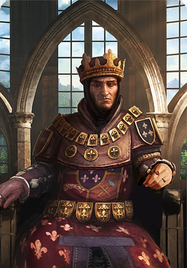
领袖：
卡组权重：
领袖技能：
打法：
围绕紧密羁绊、间谍和攻城牌展开。
这副卡组主要使用来自泰莫利亚领域的单位和角色，包括蓝衣铁卫。
间谍单位能提高抽到紧密羁绊单位的机会。你也能拥有一批可靠的攻城单位。
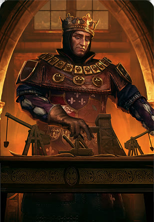
领袖：
卡组权重：
领袖技能：
打法：
围绕紧密羁绊、士气鼓舞和攻城牌展开。
这副卡组主要使用来自亚甸和科德温领域的单位和角色。
它拥有大量优秀的攻城单位（其中几张带紧密羁绊），还能通过攻城排上的多个士气鼓舞进一步强化。
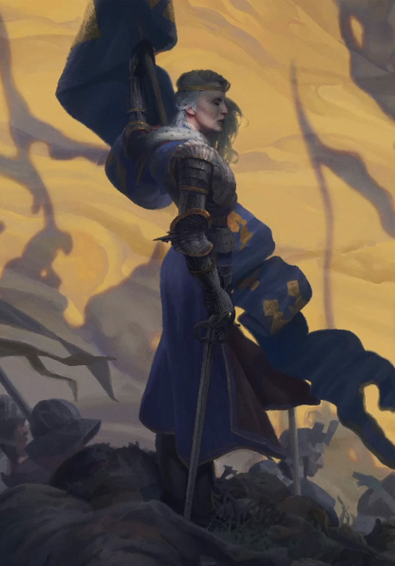
领袖：
卡组权重：
领袖技能：
打法：
围绕集结、辛特拉大屠杀和召唤复仇者展开。
这副卡组主要使用来自辛特拉领域以及一些周边小国（如克拉科、西达里斯）的单位和角色。
由于埃斯特·图尔塞克的存在，它还带来了史凯利格舰队的威力。
这副卡组的设计思路是突出辛特拉的大屠杀与重生，因此技能选择也围绕这一点。
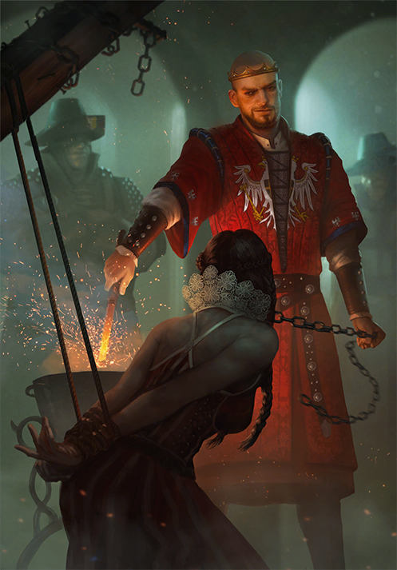
领袖：
卡组权重：
领袖技能：
打法：
围绕间谍、医疗兵和高战力单位展开。
这副卡组主要使用来自瑞达尼亚领域的单位和角色。
它的许多高战力单位能和间谍、医疗兵配合得很好。你还可以尝试组合科林弗利德屠龙者。
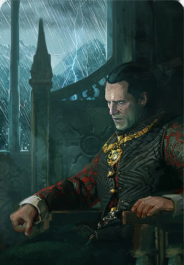
领袖：
卡组权重：
领袖技能：
打法：
围绕间谍、医疗兵、指挥官之角和少量紧密羁绊展开。
这副卡组主要使用尼弗迦德帝国的军团单位。
它旨在表现尼弗迦德军队的庞大规模，因此卡牌数量较多。
大量医疗兵和少量间谍能让你在战场上投入更多单位，再通过可用的指挥官之角进一步放大。
它的英雄数量比通常多一些，但其中一些英雄牌很弱。
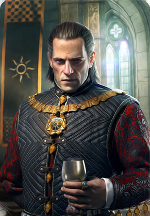
领袖：
卡组权重：
领袖技能：
打法：
围绕间谍和紧密羁绊展开。
这副卡组主要使用尼弗迦德帝国的贵族和显贵。
它旨在表现帝国的宫廷及其种种阴谋。
大量的间谍能让因佩拉卫队发挥极大作用。
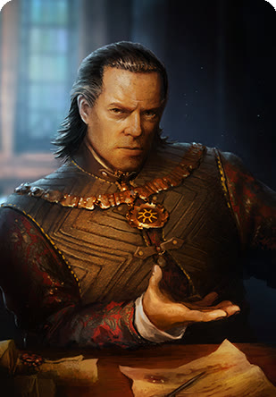
领袖：
卡组权重：
领袖技能：
打法：
围绕集结、焦炎、医疗兵和间谍展开。
这副卡组使用尼弗迦德帝国的其他军团单位。
与另一副军团卡组不同，这副卡组加入了一些集结和焦炎，对「人海」的依赖较少。
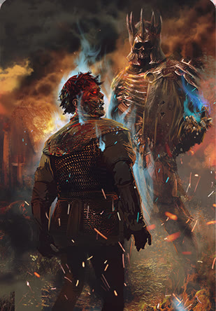
领袖：
卡组权重：
领袖技能：
打法：
围绕集结和高战力单位展开。
这副卡组主要使用与狂猎相关的卡牌，以及一些巨型怪物。
虽然主要特色是近战单位的集结，但它也拥有不错的攻城单位。
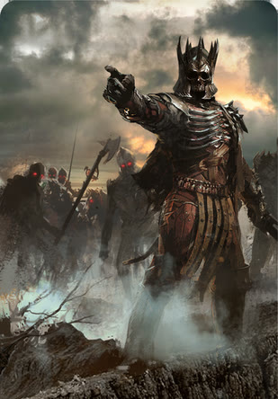
领袖：
卡组权重：
领袖技能：
打法：
围绕大量集结单位展开。
这副卡组主要使用《巫师》宇宙中种类繁多的怪物——体型较小但数量更多的那种。
这副卡组严重依赖大量集结，主要集中在近战排。这也是它比通常卡牌更多的原因。
它能迅速铺场，但打牌必须谨慎，因为很容易耗尽你的集结牌。
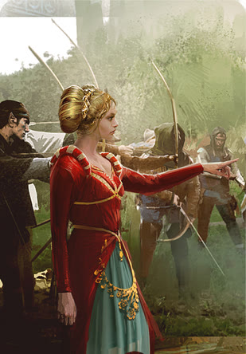
领袖：
卡组权重：
领袖技能：
打法：
围绕集结和医疗兵单位展开。
这副卡组主要使用松鼠党的非人类游击战士。
它主要依靠集结，配合数量可观的医疗兵。
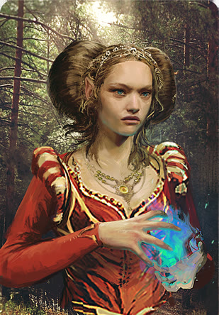
领袖：
卡组权重：
领袖技能：
打法：
围绕集结和士气鼓舞单位展开。
这副卡组主要使用更和平的非人类领地，如布洛克莱昂、多尔·布雷坦纳和玛哈坎。
它依靠集结与士气鼓舞的组合。
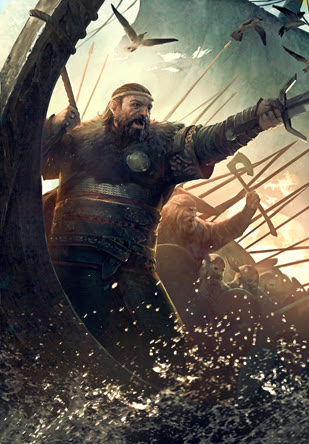
领袖：
卡组权重：
领袖技能：
打法：
围绕狂战士、集结和紧密羁绊单位展开。
这副卡组主要使用史凯利格主岛大史凯利格及其上的两个氏族（安·克莱特族和德拉蒙德族），以及斯瓦勃罗德教派。
这副卡组主打狂战士/曼陀罗技能，辅以一些紧密羁绊和一次非常强力的集结。
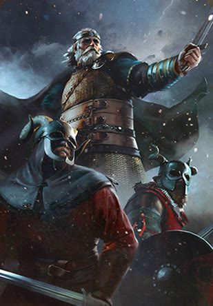
领袖：
卡组权重：
领袖技能：
打法：
围绕集结、紧密羁绊和医疗兵单位展开。
这副卡组主要使用史凯利格其他小岛及其上的氏族。
它依靠紧密羁绊与集结单位的良好组合，并辅以数量可观的医疗兵。
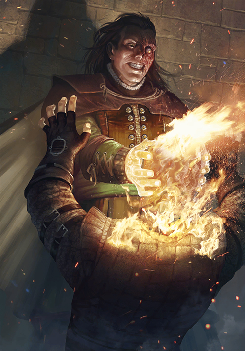
领袖：
卡组权重：
领袖技能：
打法：
围绕集结和医疗兵单位展开。
这副卡组主要使用《巫师》宇宙中一些著名的战士与法师，他们并不依附于某个特定领域。
它主要依靠集结和医疗兵单位。
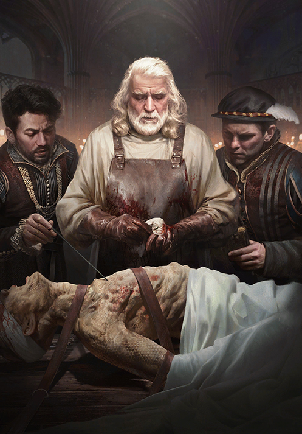
领袖：
卡组权重：
领袖技能：
打法：
围绕猎魔人学派、坚韧和焦炎展开。
这副卡组主要使用真正的猎魔人及其学派。
它使用一套特殊技能，鼓励把同一学派的猎魔人连同他们的要塞一起打出。
除了常规的特殊牌，它还引入了拥有独特技能的法印。
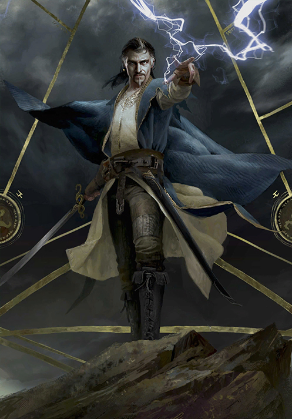
领袖：
卡组权重：
领袖技能：
打法：
围绕集结、焦炎和间谍单位展开。
这副卡组主要使用《巫师》宇宙中一些罕见的生物和恶魔，包括《石之心》中的角色。
它主要依靠集结和焦炎单位，并辅以一些间谍和整体强力单位。
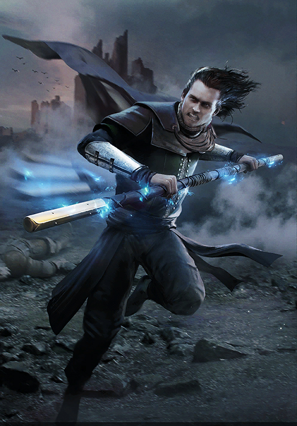
领袖：
卡组权重：
领袖技能：
打法：
围绕召唤复仇者和医疗兵单位展开。
这副卡组主要使用利维亚的杰洛特、他的亲密朋友以及《巫师》宇宙中各种盟友。
召唤复仇者是这副卡组的重要部分——罗奇和凯尔派能召唤杰洛特和希里。
与医疗兵单位结合后，它能变得非常强大。
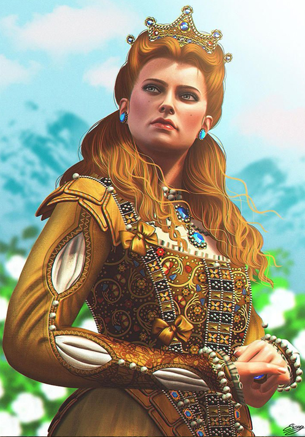
领袖：
卡组权重：
领袖技能：
打法：
围绕紧密羁绊、集结和高战力单位展开。
这副卡组主要使用陶森特的骑士与贵族。
它由大量强力单位构成，其中一些带紧密羁绊——如果放任不管，会变得非常强。
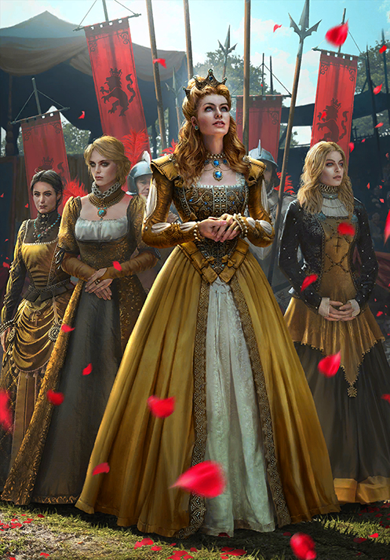
领袖：
卡组权重：
领袖技能：
打法：
围绕集结和高战力单位展开。
这副卡组主要使用陶森特的怪物与吸血鬼。
它由大量强力单位构成，辅以一些集结单位，是一套非常有韧性的组合。
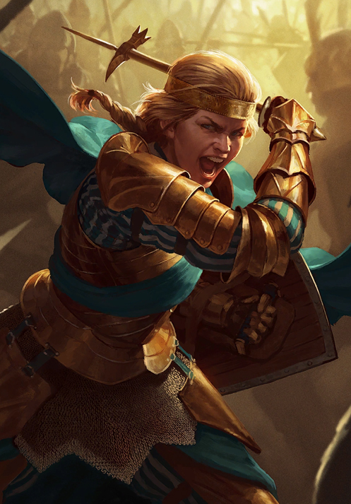
领袖：
卡组权重：
领袖技能：
打法：
围绕集结和医疗兵单位展开。
这副卡组主要使用莱里亚与利维亚军队的前锋（近战与远程单位的混合）。
它由一批集结单位组成，并由医疗兵支援。护盾特殊牌让集中在一起的集结单位拥有极大的潜力。
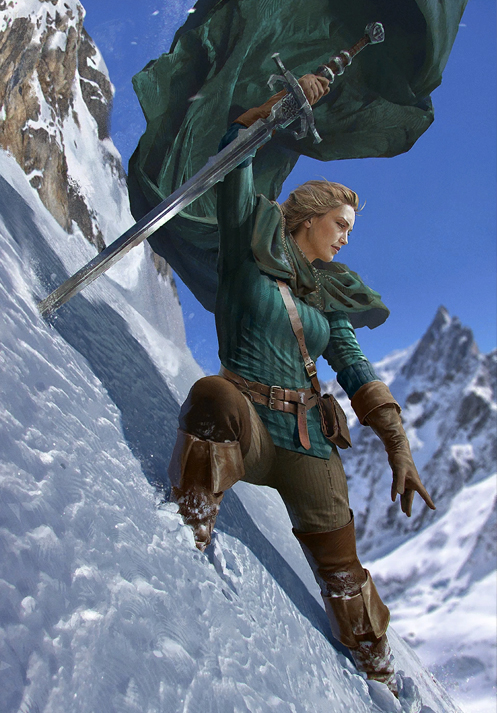
领袖：
卡组权重：
领袖技能：
打法：
围绕焦炎、间谍和医疗兵单位展开。
这副卡组主要使用莱里亚与利维亚军队的后卫（远程与攻城单位的混合）。
它由一批远程与攻城单位组成，拥有多种特殊牌与医疗兵配合。
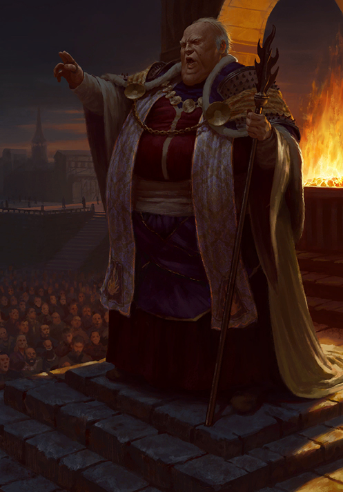
领袖：
卡组权重：
领袖技能：
打法：
围绕猎巫、集结和二聚魔法展开。
这副卡组主要使用永恒圣火教派以及烈焰玫瑰骑士团。
由于本身的性质，它拥有独特的猎巫技能，配合集结与二聚魔法镣铐特殊牌。
这副卡组从数字上看似乎很弱，但非常有攻击性。
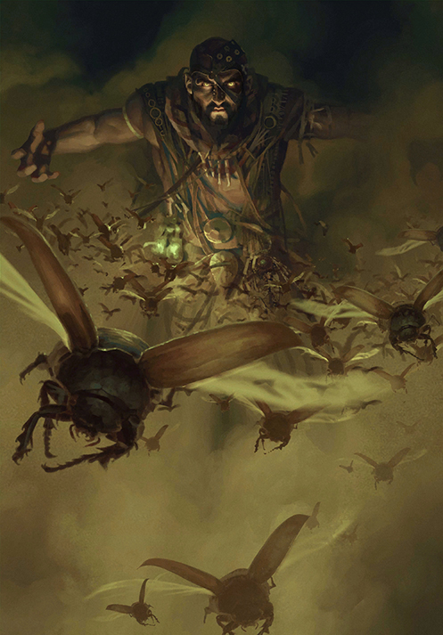
领袖：
卡组权重：
领袖技能：
打法： 围绕集结、焦炎和召唤复仇者展开。
这副卡组主要使用萨拉曼德拉组织。
它主要依靠大量焦炎单位，配合一些集结和召唤复仇者，因此也是一副极具攻击性的卡组。
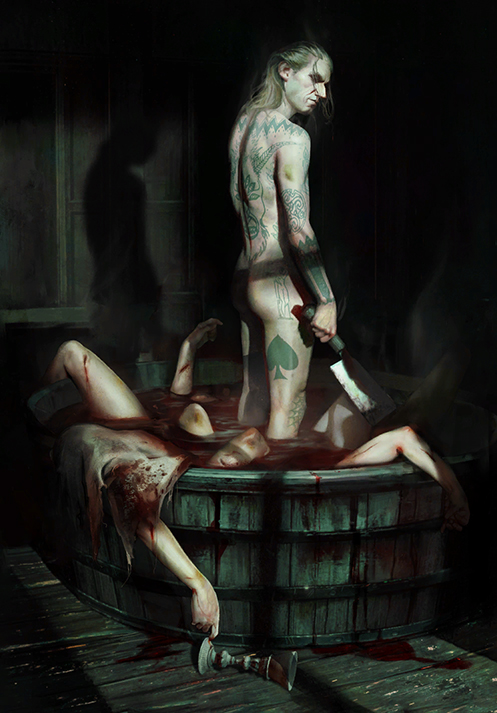
领袖：
卡组权重：
领袖技能：
打法：
围绕间谍、紧密羁绊和集结展开。
这副卡组主要使用诺维格瑞的帮派（辛迪加的核心）。
它严重依赖大量间谍，以便让多组紧密羁绊单位发挥作用。
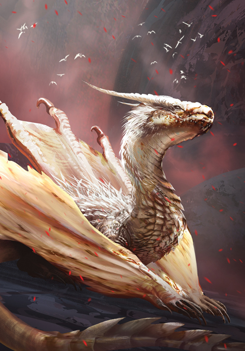
领袖：
卡组权重：
领袖技能：
打法：
围绕朝拜者与被朝拜单位，以及医疗兵展开。
这副卡组主要使用泽瑞坎尼亚的巨龙教派。
它需要在场上配合巨龙和费瑟尔，才能发挥强大的加成。
由于巨龙本身就是强力单位，你既可以把它们全部集中在一回合内爆发，也可以分散到几个回合。
使用医疗兵可以让你在后续回合复活巨龙。
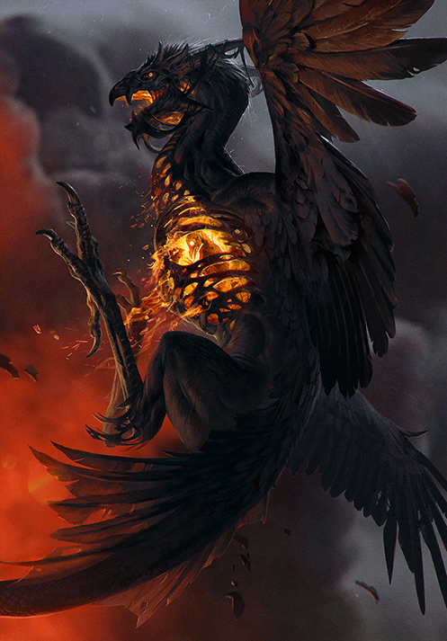
领袖：
卡组权重：
领袖技能：
打法：
围绕激励、焦炎以及多种技能的组合展开。
这副卡组主要使用泽瑞坎尼亚的战斗单位与生物。
它的主要特色是自由战士，他们能相互提升。
这副卡组也拥有大多数技能的平衡搭配，尤其是焦炎和医疗兵。